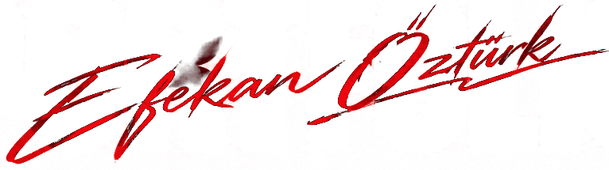
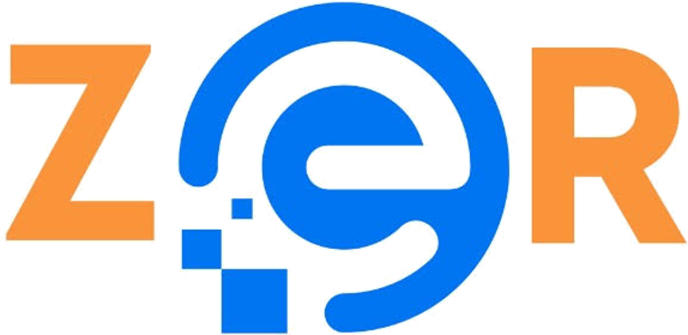

Teknolojiyi sadece geliştirmiyor, hayata geçiriyorum.
Bir problemi dinlemekle başlarım. İhtiyacı analiz eder, uygulanabilir bir çözüm tasarlar, gerektiğinde yazılımını geliştirir ve sistemi sahada hayata geçiririm. Projenin yalnızca teknik tarafında değil, müşteri iletişimi, çözüm sunumu ve satış sürecinde de aktif rol alırım.
Yazılım geliştirme, network altyapıları ve saha teknolojileri arasında çalışarak; bir sistemin fikir aşamasından kurulumuna, kullanımından ortaya çıkan problemlerin çözümüne kadar uçtan uca sorumluluk almayı hedefliyorum.
Network tarafında TCP/IP, routing, switching, VLAN, VPN ve ağ altyapıları üzerine çalışırken; sahada PDKS, geçiş kontrol, turnike, kamera, VideoWall ve IoT sistemleriyle gerçek problemlere çözüm üretiyorum.
Personel Devam Kontrol (PDKS) sistemleri; yüz tanıma ve kartlı geçiş terminallerinin ağ altyapı yönetimi.
Müşteri kayıtları, işlem geçmişi, randevu ve servis süreçlerini tek panel üzerinden yöneten, işletmelere özel geliştirilen uçtan uca responsive web yönetim platformu.
Switch, router, VLAN ve IP tabanlı ağ altyapılarının kurulumu ve yönetimi. IoT, PDKS, güvenlik sistemleri ve saha cihazlarının network entegrasyonu ve teknik sorunlarının çözümü.
Müşteri taleplerinin teknik açıdan değerlendirilmesi, uygun ürün ve çözümlerin belirlenmesi, şartname ve teklif süreçlerinin hazırlanması ve satış öncesi teknik süreçlerin takibi. Teknik bilgi ile müşteri ihtiyaçlarını bir araya getirerek çözüm geliştirmeye odaklanıyorum.

Çalışanıdır.Zer Sistem benim için yalnızca çalıştığım bir şirket değil; sahayı, müşteriyi ve teknik problemlerin gerçek dünyadaki karşılığını öğrendiğim bir yolculuğun parçası. Bu ailenin içinde network altyapılarından PDKS ve geçiş kontrol sistemlerine, donanım entegrasyonlarından saha operasyonlarına kadar birçok farklı alanda deneyim kazanıyorum.
Her projede yalnızca sistemi kurmayı değil; problemi anlamayı, ihtiyacı doğru analiz etmeyi ve uygulanabilir bir çözüm üretmeyi öğreniyorum. Bazen bir switch'in başında, bazen sahada bir cihazın karşısında, bazen de bir müşterinin ihtiyacını dinlerken aynı hikâyenin farklı bir parçasını oluşturuyorum.
Zer Sistem ile olan hikâyem; öğrendikçe sorumluluk aldığım, sahada deneyim kazandığım ve teknik bilgimi gerçek problemlere dönüştürmeyi öğrendiğim bir süreç. Bu yolculuğun beni ileride teknik satış, çözüm geliştirme ve proje yönetimi tarafında daha güçlü bir noktaya taşımasını hedefliyorum.